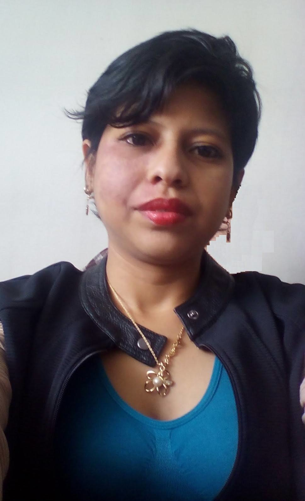

Estefanía Erreyes Cedeño 
Estudiante de Ingeniería en Electrónica y Telecomunicaciones
Facultad de Ingeniería Eléctrica y Electrónica
Escuela Politécnica Nacional- Quito- Ecuador


Estudiante de Ingeniería en Electrónica y Telecomunicaciones
Facultad de Ingeniería Eléctrica y Electrónica
Escuela Politécnica Nacional- Quito- Ecuador


Oriunda de Machala-El Oro-Ecuador, y habiendo realizado mis estudios básico y bachillerato en dicha ciudad, me traslado a Quito-Ecuador con la finalidad de estudiar Ingenieía en Electrónica y Telecomunicaciones en la Escuela Politécnica Nacional. Actualmente me encuentro realizando mi trabajo de titulación en dicha institución.
Durante el periodo de estudios de Pregrado, pertenecí al Club de Robótica de la EPN, en la cual se desarrollaron en conjunto con un equipo de trabajo proyectos de concurso a nivel nacional.Fui parte del laboratorio de informática de la facultad de la que soy parte, donde pude adquirir habilidades en administración y mantenimiento de redes y equipos.
| Introducción a Linux como entorno de desarrollo de sistemas software. |
| Otros... |
| Administración de RedHat- Curso intensivo presencial. |